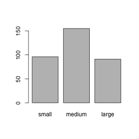

Working with data in a data frame
As we saw earlier, read.csv loads tabular data from a CSV file into a data frame.
diabetes <- read.csv("intro-r/diabetes.csv")
class(diabetes)## [1] "data.frame"head(diabetes)## subject glyhb location age gender height weight frame
## 1 S1002 4.64 Buckingham 58 female 61 256 large
## 2 S1003 4.63 Buckingham 67 male 67 119 large
## 3 S1005 7.72 Buckingham 64 male 68 183 medium
## 4 S1008 4.81 Buckingham 34 male 71 190 large
## 5 S1011 4.84 Buckingham 30 male 69 191 medium
## 6 S1015 3.94 Buckingham 37 male 59 170 mediumcolnames(diabetes)## [1] "subject" "glyhb" "location" "age" "gender" "height"
## [7] "weight" "frame"ncol(diabetes)## [1] 8nrow(diabetes)## [1] 354Indexing data frames
As with a matrix, a data frame can be accessed by row and column with [,].
One difference is that if we try to get a single row of the data frame, we get back a data frame with one row, rather than a vector. This is because the row may contain data of different types, and a vector can only hold elements of all the same type.
Internally, a data frame is a list of column vectors. We can use the $ syntax we saw with lists to access columns by name.
Logical indexing
A method of indexing that we haven’t discussed yet is logical indexing. Instead of specifying the row number or numbers that we want, we can give a logical vector which is TRUE for the rows we want and FALSE otherwise. This can also be used with vectors and matrices.
Suppose we want to look at all the subjects over 80 years of age. We first make a logical vector:
is_over_80 <- diabetes$age >= 80
head(is_over_80)## [1] FALSE FALSE FALSE FALSE FALSE FALSEsum(is_over_80)## [1] 9>= is a comparison operator meaning greater than or equal to. We can then grab just these rows of the data frame where is_over_80 is TRUE.
diabetes[is_over_80,]## subject glyhb location age gender height weight frame
## 45 S2770 4.98 Buckingham 92 female 62 217 large
## 56 S2794 8.40 Buckingham 91 female 61 127 <NA>
## 90 S4803 5.71 Louisa 83 female 59 125 medium
## 130 S13500 5.60 Louisa 82 male 66 163 <NA>
## 139 S15013 4.57 Louisa 81 female 64 158 medium
## 193 S15815 4.92 Buckingham 82 female 63 170 medium
## 321 S40784 10.07 Louisa 84 female 60 192 small
## 323 S40786 6.48 Louisa 80 male 71 212 medium
## 324 S40789 11.18 Louisa 80 female 62 162 smallWe might also want to know which rows our logical vector is TRUE for. This is achieved with the which function. The result of this can also be used to index the data frame.
which_over_80 <- which(is_over_80)
which_over_80## [1] 45 56 90 130 139 193 321 323 324diabetes[which_over_80,]## subject glyhb location age gender height weight frame
## 45 S2770 4.98 Buckingham 92 female 62 217 large
## 56 S2794 8.40 Buckingham 91 female 61 127 <NA>
## 90 S4803 5.71 Louisa 83 female 59 125 medium
## 130 S13500 5.60 Louisa 82 male 66 163 <NA>
## 139 S15013 4.57 Louisa 81 female 64 158 medium
## 193 S15815 4.92 Buckingham 82 female 63 170 medium
## 321 S40784 10.07 Louisa 84 female 60 192 small
## 323 S40786 6.48 Louisa 80 male 71 212 medium
## 324 S40789 11.18 Louisa 80 female 62 162 smallComparison operators available are:
x == y“equal to”x != y“not equal to”x < y“less than”x > y“greater than”x <= y“less than or equal to”x >= y“greater than or equal to”
More complicated conditions can be constructed using logical operators:
a & b“and”, true only if bothaandbare true.a | b“or”, true if eitheraorbor both are true.! a“not” , true ifais false, and false ifais true.
is_over_80_and_female <- is_over_80 & diabetes$gender == "female"
is_not_from_buckingham <- !(diabetes$location == "Buckingham")
# or
is_not_from_buckingham <- diabetes$location != "Buckingham"The data we are working with is derived from a dataset called diabetes in the faraway package. The rows are people interviewed as part of a study of diabetes prevalence. The column glyhb is a measurement of percent glycosylated haemoglobin, which gives information about long term glucose levels in blood. Values greater than 7% are usually taken as a positive diagnosis of diabetes. Let’s add this as a column.
diabetes$diabetic <- diabetes$glyhb > 7.0
head(diabetes)## subject glyhb location age gender height weight frame diabetic
## 1 S1002 4.64 Buckingham 58 female 61 256 large FALSE
## 2 S1003 4.63 Buckingham 67 male 67 119 large FALSE
## 3 S1005 7.72 Buckingham 64 male 68 183 medium TRUE
## 4 S1008 4.81 Buckingham 34 male 71 190 large FALSE
## 5 S1011 4.84 Buckingham 30 male 69 191 medium FALSE
## 6 S1015 3.94 Buckingham 37 male 59 170 medium FALSEChallenge
Which female subjects from Buckingham are under the age of 25?
What is their average glyhb?
Are any of them diabetic?
Missing data
summary gives an overview of a data frame.
summary(diabetes)## subject glyhb location age
## S10000 : 1 Min. : 2.680 Buckingham:178 Min. :19.00
## S10001 : 1 1st Qu.: 4.385 Louisa :176 1st Qu.:35.00
## S10016 : 1 Median : 4.840 Median :45.00
## S1002 : 1 Mean : 5.580 Mean :46.91
## S10020 : 1 3rd Qu.: 5.565 3rd Qu.:60.00
## S1003 : 1 Max. :16.110 Max. :92.00
## (Other):348 NA's :11
## gender height weight frame diabetic
## female:206 Min. :52.00 Min. : 99.0 large : 91 Mode :logical
## male :148 1st Qu.:63.00 1st Qu.:150.0 medium:155 FALSE:291
## Median :66.00 Median :171.0 small : 96 TRUE :52
## Mean :65.93 Mean :176.2 NA's : 12 NA's :11
## 3rd Qu.:69.00 3rd Qu.:198.0
## Max. :76.00 Max. :325.0
## NA's :5 NA's :1We see that some columns contain NAs. NA is R’s way of indicating missing data. Missing data is important in statistics, so R is careful with its treatment of this. If we try to calculate with an NA the result will be NA.
1 + NA## [1] NAmean(diabetes$glyhb)## [1] NAMany summary functions, such as mean, have a flag to say ignore NA values.
mean(diabetes$glyhb, na.rm=TRUE)## [1] 5.580292There is also an is.na function, allowing us to perform this removal manually using logical indexing.
not_missing <- !is.na(diabetes$glyhb)
mean( diabetes$glyhb[not_missing] )## [1] 5.580292Factors
When R loads a CSV file, it tries to give appropriate types to the columns. Let’s examine what types R has given our data.
str(diabetes)## 'data.frame': 354 obs. of 9 variables:
## $ subject : Factor w/ 354 levels "S10000","S10001",..: 4 6 7 8 9 10 11 12 13 14 ...
## $ glyhb : num 4.64 4.63 7.72 4.81 4.84 ...
## $ location: Factor w/ 2 levels "Buckingham","Louisa": 1 1 1 1 1 1 1 1 2 2 ...
## $ age : int 58 67 64 34 30 37 45 55 60 38 ...
## $ gender : Factor w/ 2 levels "female","male": 1 2 2 2 2 2 2 1 1 1 ...
## $ height : int 61 67 68 71 69 59 69 63 65 58 ...
## $ weight : int 256 119 183 190 191 170 166 202 156 195 ...
## $ frame : Factor w/ 3 levels "large","medium",..: 1 1 2 1 2 2 1 3 2 2 ...
## $ diabetic: logi FALSE FALSE TRUE FALSE FALSE FALSE ...We might have expected the text columns to be the “character” data type, but they are instead “factor”s.
head( diabetes$frame )## [1] large large medium large medium medium
## Levels: large medium smallR uses the factor data type to store a vector of categorical data. The different possible categories are called “levels”.
Factors can be created from character vectors with factor. We sometimes care what order the levels are in, since this can affect how data is plotted or tabulated by various functions. If there is some sort of baseline level, such as “wildtype strain” or “no treatment”, it is usually given first. factor has an argument levels= to specify the desired order of levels.
Factors can be converted back to a character vector with as.character.
When R loaded our data, it chose levels in alphabetical order. Let’s adjust that for the column diabetes$frame.
diabetes$frame <- factor(diabetes$frame, levels=c("small","medium","large"))
head( diabetes$frame )## [1] large large medium large medium medium
## Levels: small medium largePlotting factors
Some functions in R do different things if you give them different types of argument. summary and plot are examples of such functions.
If we plot factors, R shows the proportions of each level in the factor. We can also see that R uses the order of levels we gave it in the plot.
plot( diabetes$frame )
When we give R two factors to plot it produces a “mosaic plot” that helps us see if there is any relationship between the two factors.
plot( diabetes$gender, diabetes$frame )
diabetes$diabetic is logical, but we can tell R to turn it into a factor to produce this type of plot for this column as well.
plot( factor(diabetes$diabetic) )
plot( diabetes$frame, factor(diabetes$diabetic) )
Summarizing factors
The table function gives us the actual numbers behind the graphical summaries we just plotted (a “contingency table”).
table(diabetes$frame)##
## small medium large
## 96 155 91table(diabetes$diabetic, diabetes$frame)##
## small medium large
## FALSE 87 126 69
## TRUE 7 24 19Fisher’s Exact Test (fisher.test) or a chi-squared test (chiseq.test) can be used to show that two factors are not independent.
fisher.test( table(diabetes$diabetic, diabetes$frame) )##
## Fisher's Exact Test for Count Data
##
## data: table(diabetes$diabetic, diabetes$frame)
## p-value = 0.02069
## alternative hypothesis: two.sidedChallenge - gender and diabetes
Do you think there is any association between gender and whether a person is diabetic shown by this data set?
Why, or why not?
Summarizing data frames
We were able to summarize the dimensions (rows or columns) of a matrix with apply. In a data frame instead of summarizing along different dimensions, we can summarize with respect to different factor columns.
We already saw how to count different levels in a factor with table.
We can use summary functions such as mean with a function called tapply, which works similarly to apply. The three arguments we need are very similar to the three arguments we used with apply:
- The data to summarize.
- What we want not to be collapsed away in the output.
- The function to use to summarize the data.
However rather than specifying a dimension for argument 2 we specify a factor.
tapply(diabetes$glyhb, diabetes$frame, mean)## small medium large
## NA NA NAWe obtain NAs because our data contains NAs. We need to tell mean to ignore these. Additional arguments to tapply are passed to the function given, here mean, so we can tell mean to ignore NA with
tapply(diabetes$glyhb, diabetes$frame, mean, na.rm=TRUE)## small medium large
## 4.971064 5.721333 6.035795The result is a vector, with names from the classifying factor. These means of a continuous measurement seem to be bearing out our earlier observation using a discrete form of the measurement, that this data show some link between body frame and diabetes prevalence.
We can summarize over several factors, in which case they must be given as a list. Two factors produces a matrix. More factors would produce a higher dimensional array.
tapply(diabetes$glyhb, list(diabetes$frame, diabetes$gender), mean, na.rm=TRUE)## female male
## small 5.042308 4.811379
## medium 5.490106 6.109464
## large 6.196286 5.929811This is similar to a “pivot table”, which you may have used in a spreadsheet.
Challenge
Find the age of the youngest and oldest subject, for each gender and in each location in the study.
Extension: How could we clean up the data frame so we never needed to use na.rm=TRUE when summarizing glyhb values?
Melting a matrix into a data frame
You may be starting to see that the idea of a matrix and the idea of a data frame with some factor columns are interchangeable. Depending on what we are doing, we may shift between these two representations of the same data.
Modern R usage emphasizes use of data frames over matrices, as data frames are the more flexible representation. Everything we can represent with a matrix we can represent with a data frame, but not vice versa.
tapply took us from a data frame to a matrix. We can go the other way, from a matrix to a data frame, with the melt function in the package reshape2.
library(reshape2)
averages <- tapply(diabetes$glyhb, list(diabetes$frame, diabetes$gender), mean, na.rm=TRUE)
melt(averages)## Var1 Var2 value
## 1 small female 5.042308
## 2 medium female 5.490106
## 3 large female 6.196286
## 4 small male 4.811379
## 5 medium male 6.109464
## 6 large male 5.929811counts <- table(diabetes$frame, diabetes$gender)
melt(counts)## Var1 Var2 value
## 1 small female 66
## 2 medium female 96
## 3 large female 37
## 4 small male 30
## 5 medium male 59
## 6 large male 54Merging two data frames
One often wishes to merge data from two different sources. We want a new data frame with columns from both of the input data frames. This is also called a join operation.
Information about cholesterol levels for our diabetes study has been collected, and we have it in a second CSV file.
cholesterol <- read.csv("data/intro-r/chol.csv")## Warning in file(file, "rt"): cannot open file 'data/intro-r/chol.csv': No
## such file or directory## Error in file(file, "rt"): cannot open the connectionhead(cholesterol)## Error in head(cholesterol): object 'cholesterol' not foundGreat! We’ll just add this new column of data to our data frame.
diabetes2 <- diabetes
diabetes2$chol <- cholesterol$chol## Error in eval(expr, envir, enclos): object 'cholesterol' not foundOh. The two data frames don’t have exactly the same set of subjects. We should also have checked if they were even in the same order before blithely combining them. R has shown an error this time, but there are ways to mess up like this that would not show an error. How embarassing.
nrow(diabetes)## [1] 354nrow(cholesterol)## Error in nrow(cholesterol): object 'cholesterol' not foundlength( intersect(diabetes$subject, cholesterol$subject) )## Error in as.vector(y): object 'cholesterol' not foundInner join using the merge function
We will have to do the best we can with the subjects that are present in both data frames (an “inner join”). The merge function lets us merge the data frames.
diabetes2 <- merge(diabetes, cholesterol, by="subject")## Error in as.data.frame(y): object 'cholesterol' not foundnrow(diabetes2)## [1] 354head(diabetes2)## subject glyhb location age gender height weight frame diabetic
## 1 S1002 4.64 Buckingham 58 female 61 256 large FALSE
## 2 S1003 4.63 Buckingham 67 male 67 119 large FALSE
## 3 S1005 7.72 Buckingham 64 male 68 183 medium TRUE
## 4 S1008 4.81 Buckingham 34 male 71 190 large FALSE
## 5 S1011 4.84 Buckingham 30 male 69 191 medium FALSE
## 6 S1015 3.94 Buckingham 37 male 59 170 medium FALSEplot(diabetes2$chol, diabetes2$glyhb)## Error in xy.coords(x, y, xlabel, ylabel, log): 'x' and 'y' lengths differNote that the result is in a different order to the input. However it contains the correct rows.
Left join using the merge function
merge has various optional arguments that let us tweak how it operates. For example if we wanted to retain all rows from our first data frame we could specify all.x=TRUE. This is a “left join”.
diabetes3 <- merge(diabetes, cholesterol, by="subject", all.x=TRUE)## Error in as.data.frame(y): object 'cholesterol' not foundnrow(diabetes3)## Error in nrow(diabetes3): object 'diabetes3' not foundhead(diabetes3)## Error in head(diabetes3): object 'diabetes3' not foundThe data missing from the second data frame is indicated by NAs.